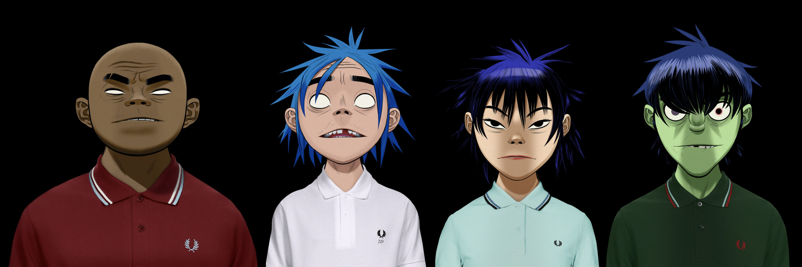

2000 годы
Twenty One Pilots
американский дуэт из Колумбуса, штат Огайо. Группа образовалась в 2009 году и на данный момент состоит из Тайлера Джозефа и Джоша Дана. Коллектив самостоятельно выпустил два альбома: Twenty One Pilots в 2009 и Regional at Best в 2011.


Gorillaz
британская виртуальная группа, созданная в 1998 году Деймоном Албарном и Джейми Хьюлеттом. Проект включает в себя обширную вымышленную вселенную, окружающую саму «виртуальную группу», состоящую из четырёх анимационных участников: 2-D, Мёрдока Никкалса, Нудл и Рассела Хоббса.
Linkin park
американская рок-группа, основанная в 1996 году под названием Xero и исполняющая музыку преимущественно в стилях альтернативный метал, ню-метал и рэп-метал, альтернативный рок, электроник-рок, поп и поп-рок.